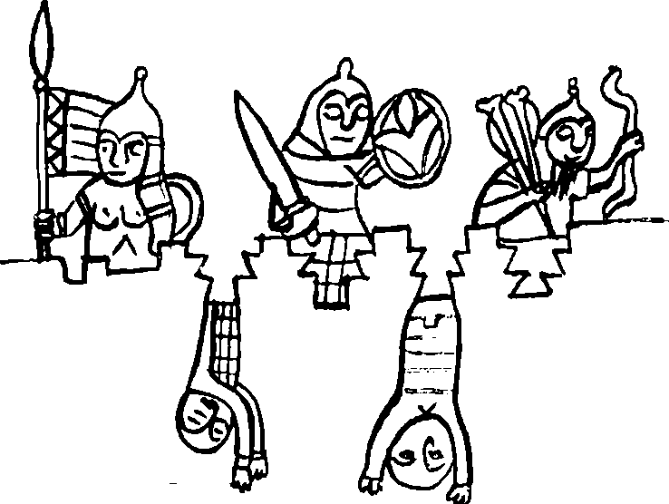

Sarkel ufuklarında güneş doğuyor. Uzaktan yakından horoz sesleri yankılanıyor. Bir öküz acı acı böğürüyor. Son altı yıldır her sabah yaptığım gibi, Töre’yi okumaya başlıyorum. Tuhaf şey, kafamı hiç toparlayamıyorum. Uzaklardan hafif bir yanık kokusu geliyor. Güzde miyiz? Yatıklar ile oturaklar, toprağı işlemek zorunda olan bu yoksullar tarlalarda anız mı yakıyor? Yoo, olamaz, olmamalı! Daha dün burnuma baharın çiçek kokuları geliyordu, daha dün yolunu şaşıran bir kelebek tavan deliğinden içeri girmişti. Olamaz. Olmamalı. Yoksa bu daha dün dediklerimin üzerinden aylar mı geçti? Olabilir, olur! Ravların gelişinden sonra hiçbir şey değişmedi. Bildiğim tek şey Maşiah beğ Yaşıl Kırın Sarkel’den çıkınca İdil’e hiç gitmeden, kaçıp Oğuz eline girdiği. Emgek ya ağzından kaçırdı ya da bileyim istedi. Güç Kulesi’nde gücümün doruğundayım! Yani en üst kattayım! Hah... hah... İyi bir söz oyunu... Hoh... hoh... Böyle Tanrının unuttuğu bir kulede on üç koca yıl geçirince insan söz oyunu hazırlamaya çok vakit buluyor.
Bazen saz oyunu da yapıyorum. Emgek’in içinde balık getirdiği keçi derisi tulumun at kuyruğundan koparılmış sert tellerle dikildiğini anladığım gün yaptım sazımı! Tulumu büyük bir dikkatle söktüm. At kıllarını kalınlıklarına ve boylarına göre ayırdım. Aynı kalınlıktaki kuyruk kıllarını birbirine düğümledim. Katı boynuz yayımı indirdim. Kalından başlayarak inceye doğru, telleri yay ile kiriş arasına gerdim, bağladım. On iki telli bağlamam değildi, kolca kopuzum hiç değildi ama an temiz bir ses verdi. Birkaç ay içinde istediğim her şeyi çalabiliyordum. Bana öyle geliyor ki, özellikle tavan deliğimin altında ayakta durup sazımı tıngırdattığımda, esen yelin ara ara alıp götürdüğü bir ses aşağıdaki insanların kulaklarına çarpıyordur. Kim bilir?
Kim bilir... Özgürce çalıyorum çünkü tutsakçılarım artık odamı aramıyorlar bile. Dayakları da iyice azaldı. Tutsaklık canıma tak ettiğinde, sıkıntıdan patladığımda, biraz hır çıksın da ortalık şenlensin diyerek onları tekmelemesem, fiske bile vuracakları yok. Yoksullar artık hiç tek başlarına gelmiyorlar. Enikonu korktuklarını anlıyorum. “Size bir arslan olup görüneyim mi?” gibi takılmalarımla yüz göz olmaksızın, yemekleri bırakmalarıyla çıkmaları bir oluyor. Hem iyi hem kötü oldu. Neredeyse karışanım görüşenim kalmadı gibi bir şey. Öte yandan kentten, Sarkel’den, Selcük’ten, bozkırdan aldığım haberler iyice azaldı. Görüş günü diye bir şeyim kalmadı. Kimsenin beni görmesini istemiyorlar.
Tuhaf ama, yüzlerce yıl önce kazınmış Töre kabuklarından aldığım bilgi ise çoğaldı. Belki bu sabah okumakta biraz isteksizim ama çok şey öğrendim Kayıg Yablak Arslan’ın Töre’sinden. Karmakarışık olmalarına karşın, yıllarca uğraşarak doğru bir biçimde kabukları sıraladım sanırım. Aralarda büyük boşluklar olduğunu da böyle öğrendim. Ben mi yitirdim bunları? Hiç sanmıyorum. Tanrım, bizim sözlü Töre olarak bildiğimiz, şamanlarımızın, hatta yaşlılarımızın dilinden düşmeyen Töre’den ne kadar değişikmiş bu yazılı Töre!
Sanırım beş bölümden oluşan bir bitig, kitap bu. Bunu öğrendikçe kendi sözlü Töre’mizden uzaklaşıyor olabilirim, kim bilir? Ama evren nasıl yaratılmış, doğrusunu öğrendim. Bizim yoksul şamanların kim bilir hangi boyun söylenceleriyle karıştırdığı gibi değil! Öyle her yanı su içinde olan bir yeryüzünün üstünde kanat çırpıp uçan kazlar yok! Yeruşalayim’i Kişi denen kazın ağzından düşen bir çamur parçası oluşturmamış! Tanrı’nın atalarımızı söz verilmiş topraklardan sürgün ediş öyküsünü aradım ama bulamadım. Bulduğum çok güzel, çok dokunaklı başka şeyler vardı tabii. Tanrı tozdan yarattığı, adına Âdem denen kişiyi Eden diye çok güzel bir bahçeye koymuş, “istediğini ye ama iyinin ve kötünün bilgisini sunan ağaçtan yeme, yediğin gün kesinlikle öleceksin” demiş. Sonra Âdem’in yalnızlığına acımış, Uçmak’ın tüm hayvanlarını ve kuşlarını yaratmış, Âdem’in önüne getirmiş. Âdem hangisini nasıl çağırırsa, adları öyle kalmış. Kalmış da, Âdem’in can yoldaşı hâlâ yokmuş bu yaratıklar arasında. Bunun üzerine Tanrı Âdem’i uyutmuş, kaburgasından bir parça almış, yarayı sağaltmış. Aldığı kaburgadan kadını yaratmış ve Âdem’e yâr etmiş. Kadını, uyanan Âdem’in önüne getirmiş. Âdem Babamız çok, çok sevinmiş. Kolca kopuzunu indirmiş. Bakalım ne söylemiş:
“En sonunda... bak sen!
Kemiği kemiğimden,
Şimdi eti etimden
Kadın diye çağrılsın bu
Alındığı için erkekten.”
Kabuk, sonra bu Uçmak’taki hayvanlar içinde en kurnazı, en dolandırıcısı olan sürüngeni anlatırken kırılıveriyor! Elimdeki ikinci kabuk başka bir yerden, Lameleh diye bir atamızın Adah ve Zillah diye iki anamızla birden evlendiği yerden başlıyor! Sen neymişsin be dede?
Tanrı! Güç Kulesi’ne kapadığın güçsüzün bahçesi nerede? Nerede o her türlü kuş, türlü hayvan? Nerede kaburgalarından yarattığın kadını? İstemem Lameleh gibi olmak, adı görklü Selcük nerede? Nerede gönlümün eğlencesi, Sarkel’in imrencesi kara saçlı, saz benizli Arsılan oğul? Beni belki Maşiah yaptın, onurlandırdın ama oğulcuğumun büyüdüğünü göremiyorum. Yok... bugün bende bir hal var. Yok, okuyamıyorum Lameleh’in öyküsünü.
Tuhaf şey... Tuhaf, bak sabah balığımı da henüz kimse getirmedi. Burnuma iyice yanık kokuları geliyor. Esen yelin içinde insan çığlıkları da mı var? Tarla ateşleri sönmüyor mu? Peki peki, kabuklarımın sonuna doğru gidiyorum, yitirdiğim yoksul kitabım Irk Bitig’e yaptığım gibi, rastgele bir kabuk seçiyorum. Bakalım ne çıkacak? Okurken eğlenecek miyim?
“O daha sonra Hazar-Addar yoluyla Azmon’a gidecek. Azmon’dan Mısır Irmağı’na yönelecek ve denize varınca duracak. Batı sınırın ise Büyük Deniz olacak...” Tanrım, bugün iyice eğleniyorsun, “O” kim? Sayfa bu kelimeyle başlıyor, ortasında büyük bir delik var arkası da yok! Yine de içinde Hazar ve Azman gibi bana çok tanıdık gelen sözler var... Tanrı bu bir im mi? Töre okuma çabalarımı bırakıyorum, yaysazımı elime alıyorum. Daha üç kez tıngırdatmadan katırlar ürktü gibi!
Dışardan korkunç çığlıklar gelmeye başladı. Ölenler, yaralananlar olmalı. Tanrım, Sarkel’in tunçtan savaş boruları çalınıyor, Bayındır Kohen’in büyük kösleri vuruluyor. Demek ki pabuçlarımın koheni Sarkel’de. Aman Tanrım, Sarkel’e saldırıyorlar! Kim? Kimler? Kitanlar mı geldi? Kitanlar, Kunlara, Kunlar da Sarılara mı saldırdı? Ortalığı Sarılar mı bastı? Yoksa buna daha var mı? Yoksa gelen Kalın Oğuz mu? Tanrım, beni kurtarmaya mı geldiler?
Gözümü pencereme dayadım. Bir şeyler görmeye çalıştım. Yakınları ve kulenin dibini görmem pek olası değil. Bunu yapmak için deliği büyütüp başımı dışarı çıkarmam gerek. Ama surun üstünü görebiliyorum. Surun dışında yakınları yine göremiyorum ama uzakları görüyorum. On dört yıl boyunca koyun sürüsü gördüğümde sevindiğim kırlarda dev gibi bir ordu var. Dağ taş asker, at, çadır, deve dolu. Develere bakılırsa Oğuz olmalılar. Kitanlar da olabilir. Kim, kim bu kişiler? Hangi orduysa bu gelen, ordusunu çok iyi düzmüş de gelmiş. Mancınıkları var. Hem iri iri taşlar alıyorlar, hem yanar çullar sarılmış kayalar. Sarkel’in duvarları taş ve tuğladan olmasa bir günde alırlardı bu şarı. Ama neredeyse iki kulaç kalınlığındaki taş duvar dayanıyor. Duvarı ağaç duvarlar gibi yakmak, yangın çıkarmak olası değil.
Çarpışma sürüyor. Surun üstünde giyimli kuşamlı Hazar erleri var. İnenler, çıkanlar, koşuşturanlar. Yaralananlar, düşenler var. Var güçlerini pazıya vermiş, uzaklara yay çekiyorlar. Sonra eğilerek aşağıya, daha yakınlara ok atıyorlar. Hazar o gün arslanlar gibi çarpıştı. Saldıran ordunun yitirdikleri çok olmalıydı. Borular çalındı. O ordu çekildi.
O ilk günün gecesi hiç uyumadım. Sarkel de uyumadı. Surun üzerine katran kazanları koydular, altını yaktılar. Beklediler. Kuşatan ordu da ateşlerini yaktı. Bütün kırlar küçük kızıl beneklerle doldu. Gecenin kalanında bir şey olmadı. Akşam yemeğimi de kimse getirmedi. Sarkel’in içinden yaralıların ve eşlerini yitirmiş kadınların acı çığlıkları geliyordu yalnız. Tanrı’nın kırbacı şaklamaya başlamıştı. Bakalım Maşiah elinde kaç okla dışarı çıkacaktı?
Gelen giden olmamasından yüz alarak, süregiden savaşı daha iyi görebilmek için küçük çelik bıçağımla penceremi genişletmeye başladım. Önceleri, yonttuğum, kopardığım yongaları içeri almaya çabalıyordum. Sonra bir savaş sırasında bunun ne denli boş bir iş olduğunu görerek tez tez çalışmaya başladım. O gece sabaha kadar uğraştım. Yine de başımı dışarı çıkaracak kadar büyütemedim penceremi. Bir yarıktan başka bir şey olmayan penceremden şimdi ancak tek elimin yumruğunu çıkarabiliyordum. Biraz dinlendikten sonra yeni bir güçle saldırdım ve halt ettim. Bıçağımın çelik namlusu çat diye kırıldı ve aşağı düştü! Yenilmiştim. Neredeyse ağlayacaktım.
Sabah tan atarken saldıranlar borularını çalmaya başladı. İçerden de Bayındır’ın tunç boruları öttü. Her iki yandan büyük davullar vuruldu. Delikten bakmaktan şaşı oldum Alacakaranlıkta bir dev, Sarkele karşı yürüyordu. Devin kocaman çıplak bir başı vardı. Tepesinde de tek bir gözü. O gözünün içinde ateşler yanıyordu. Hazar erlerinden çığlıklar atarak kaçışanlar oldu. Tepegöz denen yaratık kalkıp Sarkel’e saldıranlara yardım ediyorsa, buna kişioğulları ne yapsın? Urus Koca oğlu Basat dedikleri yiğit, bu yaratığı basıp, başını kesmemiş miydi? Alca kanını kara yere saçmamış mıydı?
Ortalık iyice ağarınca bunun büyük bir gezer kule üstüne yerleştirilmiş, koyun derisiyle kaplanmış yalancı bir baş olduğu ortaya çıktı. Daha az korkulu bir nesne değildi ama Hazar yiğitleri gülüştüler. Kaçan tabansızlarla alay ettiler. Surdan daha yüksek, benim Güç Kule’m kadar bir şey, dört köşe, her yanma ıslak deriler gerilmiş, görmüyorum ama altında tekerlekler olmalı, içinde ok atan yiğitler var. Evet, hiç kuşkum kalmadı, bunlar Oğuz yiğitleri. Başka hiç kimse böyle dar yerde böyle güçlü yay çekemez. Kısa boylu at yaylarını almışlar. Hazar’dan çok yiğit düşürdüler. Bulundukları yüksek yerden Sarkel içine yanar oklar düşürdüler. Gelen çığlıklara bakılırsa çok yangın çıkardılar. Kuşatan ordudan çıkan uğultu yükseldi.
Kule geldi, geldi, tam surun dibine kadar sokuldu. Sonra herhalde, Sarkel surunun öne çıkan köşeli kulelerinden birindeki bir Hazar okçusu, gezer kuleye yandan, bir yanar ok gönderdi. Ok, derilerin aralık bir yerinden içeri girdi olmalı, katran kazanına düştü olmalı. Kuleden alevler yükselip, Tepegöz’ün kafasındaki derileri yakıp cascavlak bırakınca Hazar’dan çığlıklar yükseldi. Tepegöz’ün olmayan tepesine yanar oklar gönderdiler. Karşıdaki Oğuz yiğitleri ya kuledeyken oklandılar ya kendilerini aşağı bıraktılar. Tepegöz’ün kulesi dibine kadar yandı. Kuşatanlar yine geri çekildi. O gece Bayındır buyurdu, Hazar’da yemeli içmeli bir şenlik oldu.
Sonra tam beş gün boyunca dev kayalar atan bir mancınık Sarkel surunun benim baktığım yerden şimdi çok iyi görünen hep aynı bölgesini gözeterek atış yaptı. Her gün surdan bir parça düştü. Anlaşılan buradan gireceklerdi. Bayındır’ın adamları gündüz yıkılanı gece onardılar ama her seferinde duvar daha da güçsüzleşti. Bu beş gün boyunca kapımı açan olmadı. Kimse ne balık getirdi ne su. İlk gün var olan balıklarımdan biraz yedim ve su yokken bunun nasıl bir aptallık olduğunu anlayarak geri durdum. İkinci günün sonunda susuzluktan sayıklamaya, düşler görmeye başladım. Eğer bu ordu beni kurtarmaya gelen bir orduysa ya ölümü bulacak ya da susuzluktan delirmiş görecekti beni.
Yaşam gövdemden çekilip gidiyordu. Tavan penceremin tam altında yattım. Savaş sesleri arasında, bir kızıllaşıp bir kararan gökyüzü parçamı görerek ölmek istedim. Yerimden kalkıp başımı ilk geldiğim günkü gibi duvarlara vurmanın hiçbir yararı yoktu. Zaten yerimden kalkacak durumda da değildim. Ölüyordum. Yüzüm, gökyüzüme, bu acunda benim olan, gerçekten benim olan tek şeye dönük olarak, gözlerimi kapadım. Düş görmeye başladım. Düşümde, Abınçu Kız düştüğü Orhon’dan çıkmış, bükerek oluk biçimine getirdiği büyük bir kabalak yaprağı ile dudaklarıma su akıtıyordu. Çatlak dudaklarım suya dokunuyor, ıslanıyor, ben küçük yudumlar alıyordum. Birden, kalan son gücümle yerimden fırladım. Yağmur yağıyordu. Penceremin altında damla yakalamaya uğraşmadım. Koşarak, Emgek’in yıllar önce getirdiği ve benim söküp düzleştirdigim tulumun derisini balık yığınının altından çektim.
Sertleşmiş deriyi kıvırdım, bir oluk haline getirdim. Penceremden çıkardım. İri taneli bir yağmur hızlı hızlı iniyordu. Durmasın, kesilmesin diye, sözlü ve yazılı Törelerden öğrendiğim bütün duaları ediyordum. Gök de bu akşam ben yoksulla biraz eğlenmek istiyordu anlaşılan. Tek bir damla içemeden yağmur kesiliverdi. Öfkeden elimdeki deriyi kuleden aşağı bırakmak istedim. Kendimi güç tuttum. İyi de ettim. Çünkü eskisinden de iri taneli bir yağmur bastırdı. Tek elimle, ortasına başparmağımı bastırarak kıvrıkça tuttuğum deri ağırlaşmıştı. Suyun birazını taşırarak deriden oluğumu içeri aldım ve iki avuç kadar suyu bir dikişte içtim. Dışarıda savaşın gürültüsü bütünüyle dinmiş, yağmurun uğultusu her sesi bastırmıştı. Sonra bir daha ve bir daha içtim. Deri oluğum gittikçe yumuşadığı için her kez daha güç oldu su almak. Sonra aklıma Töre kabukları geldi. Bunlardan en uzun olan ve oluğa en çok benzeyeni aldım. Azar azar ama daha kolay bir şekilde suyu içeri taşıyabiliyordum. Suyu neyin içinde tutacağım ise daha büyük bir sorundu. Önce, sızdıracağını bile bile, keçi derisini kıvırarak büyük bir külah durumuna getirdim ve neredeyse kaşık kaşık su taşıyarak olabildiğince doldurdum. Sonra üstümden çıkardığım eski püskü giysilerimi ıslattım, ıslattım. Arada, içebildiğim kadar su içtim. Yağmur kesildiğinde gece çok ilerlemişti. Yorgunluktan taş gibi uyudum.
Sabah, savaş bütün çılgınlığıyla yeniden başladı. Surun görebildiğim bölgesinde, birbirine çok yakın iki ayrı yerde duvar çok güçsüzdü. Aradaki duvarın çökmesiyle açılacak bir gediğin hemen kapatılması pek olası değildi. Kuşatanlar irili ufaklı bütün mancınıklarıyla bu noktaya vurmaya çalışıyorlardı. Bu, dördüncü günün akşamına kadar böyle gitti, içeriye alabildiğim hemen tüm suyu bitirdim. Giysilerimden emdiğim suyun ekşi, tuzluca bir tadı vardı.
Kuşatan orduya belki yaşadığımı duyurur diye, her akşam savaşın biraz tavsadığı anlarda, yaysazım ile yapabildiğim kadar gürültü yaptım. Bu akşam da tam çalmaya başlamıştım ki, kalın kapımın ardına geçecek denli bir uğultu yükseldi kule içinde. Son yıllarda iyice gıcırdayan kapım, dönmeye başladı. Elimdeki yaysazımı son anda balık yığının içine sokuşturdum. Ararlarsa yandım.
Kapı, içinden geçen kalın demir milin çevresinde dönerek her iki yanından birden geçit verdi. Bir yanından Bayındır Kohen, diğerinden Benyamin İncir ve her ikisinin peşlerinden, odamın alabileceği kadar er içeri girdi. Bayındır bağırarak bunların yarısını dışarı çıkardı. Sözü hiç uzatmadı:
“Tengere Tardu Tigin! Sarkel kuşatıldı. Urus Koca ve Salur Kazan kapımıza dayandı. Ordunun yarısını ayaklanan Alanlar üzerine göndermiştim. Yarısı da İdil’de kaldı. Sarkel’in yerli askerleri ancak beş yüz kişi, ben de o kadar getirdim! Kötü yakalandık. Maşiah! Doğru dinimiz için, Aktürkler ve Köktürkler için, uruğumuz Arsılan’ın adının yücelmesi için uğraş günüdür.”
“Uğraşınız uğurlu olsun!”
“Maşiah! Anlamıyor musun, en güçlü kalemiz, Sarkel düşecek. Hazar ülkesinin kapısı aralık kalacak. Hazar ve Oğuz bozkırını kim çekip çevirecek? Buralarda bir daha Türk adını kim ağzına alacak? Sarkel düşüyor diyorum sana!”
“Düşmez kalkmaz bir Tanrı, Kohen...”
“Maşiah filan demem, vurdururum boynunu senin! Kaygısız it!”
“Ne yapayım istiyorsun Kohen?”
“Şöyle surlar üzerine çıkıp bir görün, dağılmalarını söyle, dirliğim iyidir de!”
“Kohen, bunlar beni niye dinlesin ki? Ben mi topladım bu kişileri?”
O ana kadar sessiz duran ve artık başrav olduğu anlaşılan Benyamin İncir söze karıştı:
“Senin için gelmişler Maşiah! Seni diri almadan gitmeyeceklerini söylüyorlar...”
Daha sürdürecekti ama Bayındır’dan omzuna korkunç bir topuz darbesi yiyerek sustu. Bu kadarı benim için yeterliydi. On üç yıl önce Bayındır’ın bana yaptığı gibi güleç bir duruşla,
“Atı! Sen istersen beni öldür. Leşimi Sarkel’in itlerine yedir. Benim bu çilem bitsin, siz de ne haliniz varsa görün!” dedim.
Bayındır topuzunu kaldırdı. Bana vuracak gibi bir tutum aldı. Şimşek gibi bir hızla Benyamin lncir’in başına indirdi. İncir yoksulu boş bir çuval gibi ayaklarımın dibine yıkıldı kaldı. Yüzüme sıçrayan sıcak beyin parçalarını elimin tersiyle temizleyip alay ettim:
“Kohen, vurdun ama yarı karanlıkta tam tutturamadın! Olan bir çuval İncir’e oldu. İstersen bir daha dene!”
Hanlar hanı olacak su sıçanı, kuyruğunu topladı. Arkasından atlılar kovalıyormuş gibi, gözleri dışarı uğramış, bağıra çağıra, ölmüş anama söve saya gitti. Bu da on dört yılda ikinci gelişi oldu. Giderken,
“Sana yarın sabaha dek süre! İyi düşün Tigin. Selcük ve oğlun elimde” dedi. Doğru olmadığını biliyordum. O topuzu bir de kendi başına indirse iyi ederdi. Sözünün başında Salur Kazanın Urus Koca ile birlikte geldiğini söyleyen kendi değil mi idi? Ne olmuştu da Korkut Ata bozkır dengesinden vazgeçmişti? Kuşlar kafesten uçmuş olmasa Dede, Oğuz’u Urus’a katar mıydı?
“Kohen, ben bir tutsak kişiyim. Bildiğin gibi et. Elimden ne gelir?” diye kestirip attım.
Öfkeyle çıktı. Kapım dönerek kapandı.
Gece, sabaha dek uyuyamadım. Çarpışma Güç Kulesi yakınlarında, bu gece pek zorluydu. Ara ara pencereme koşup, duvarın o bölümünün yerinde durup durmadığına bakıyordum. Yalnızca sesler ve haykırışlar değil, Bayındır’la olan konuşma da beni uyutmuyordu. Bu konuşmayı kafamda her canlandırışta çok salakça davrandığımı, Selcük ve Arsılan’ın yaşamlarıyla oynadığımı artık anlıyordum. Bayındır, benim Selcük ile olan ilişkimi, dahası, Arsılan’ın benim oğlum olduğunu nereden bilecekti? Bilmemesi gerekirdi. Demek ki... Birden kulenin çatısında korkunç bir gürültü koptu. Güç Kulesi temellerine kadar sarsıldı. Çatıya ağır bir şey, sanki bir taş çarpmıştı. Kalın çam kütükleri esnedi ama kırılmadı. O şey neyse, yuvarlanarak, gürültüler çıkararak çatıdan hızla kaydı, aşağı düştü. Aşağıdan yükselen çığlıklar, çatıdaki delikten odama doluştu.
Yaysazımı yeniden yay yaptım. Oklarımı indirip kuşağıma soktum. Ölüm eri oldum. Kapının tam karşısına geçtim, oturdum. Kararımı vermiştim. Yarın Bayındır odama girdiği an, onu delik deşik edecektim. Sonra çatıdan küçük küçük, pıtır pıtır sesler gelmeye başladı. Sanki çok iri taneli bir dolu yağıyor gibiydi. Ok! Ok yağdırıyorlardı çatıya, içinde bulunduğum umarsız duruma karşın gülümsedim. Kimdi bakalım bu iş bilmez ham erlerin başbuğu? Taşın delemedigi çatıya ok yağdırsan ne olur?
Yok, epey şey olurmuş. Oklardan biri delikten süzülerek geçti, önüme saplandı ve odamı ışığa boğdu. Yanar oku bir an elimde tuttum. Ne yapacağıma karar veremedim. Odamı bir köşesinden, mesela penceremin olduğu yerden ben de tutuştursam mı diye düşündüm. İçinde ben olduğum için çok akıllıca gelmedi bana. Yalnızca penceremin önüne koştum. Yanan oku birkaç kez o deliğin önünden geçirerek aklımca işaret verdim. Sonra okun üzerine basarak çevresindeki katranlı bezi söndürdüm. Dört ok, üç oktan daha iyiydi. Kelek gibi, sıcak temreninden tutup iki parmağımı derince yaktım. Ateşin acısından acı acı uludum. Ok atışı kesintisiz bir on dakika kadar sürdü. Sonra uzunca bir süre sessizlik oldu. Belki de bugünlük savaş bitmişti.
Yanıldığımı birazdan anladım. Çatı tutuşmuş yanıyordu. Belim kalınlığındaki çam hatıllardan biri çatırdayarak yanındakinden ayrıldı. Parmağım kalınlığındaki aralıktan alev dilleri görünmeye başladı. Odamın tavanında alıştığım yerin çok uzağında bir yerden ışık gelmesini yadırgıyordum. Çatıya yangını söndürmeye çıkan kişileri de, sanırım oklayarak caydırdılar. Ayak sesleri kesildi gitti. Bir süre sonra başımın iyice belada olduğunu gördüm. Yanmaya kalmadan havasızlıktan gidecek gibiydim. Gecenin serininde dışarda o kadar hava varken, benim içerdeki yoksul havama göz dikmişti ateş. Ciğerlerim sıkışıyordu. Hemen pencereme ağzımı dayadım, dışardan aldığım temiz havayı içime çektim. Bir saat kadar o durumda kaldım. Sonra, ateşin etkisiyle ortasından incelen kütüklerden biri tam belinden kırıldı. Bir yarısı kulenin içine düştü. Çatıda kocaman bir delik açıldı.
Havasızlık sorunu çözülmüştü ama odanın ortasında yanan koca kütük daha büyük sıkıntılar yaratıyordu. Çizmemle tekmeleyerek biraz alevlerle boğuştum. Pek bir yaran olmadı. Aklıma hâlâ biraz nemlice olan eski çapanım geldi. Kütüğün üstüne attım. Delik deşik olduğu için havayı kesemedi. Ateş yanmayı sürdürdü. Son çare olarak keçi derisini ve tuzlu balıkların toparlayabildiğim kadarını alevli kütüğün üstüne yığdım. Cızırtılar çıkaran balıklar, ateşi bir an engelleyecek denli çoktu. Hepsi beraber tutuşunca da kızılca kıyamet koptu. Yağlı balıklar çıra gibi yanıyordu.
Sıcaktan bunalmış ve umudumu iyice kesmiş bir durumda, kapının bir kanadına yüklendim. Belki önünde nöbetçi vardır. Açar. Ah, o hep bildiğim gıcırtıları çıkararak döndü, açılıverdi kapı. Tanrım, bunca zaman, açık duran bir kapı mıymış beni hapseden! Yoksa odama dalmak isteyen biri bir kanadından girmek için kapıya yüklenip açtığı sırada ben diğer kanadından mı çıktım? Düşünecek vakit yoktu. Kulenin on dört yıl önce tırmandığım merdivenlerini üçer beşer atlayarak aşağı inmeye başladım. Neredeyse çırılçıplaktım. Yayıma bir ok taktım. Tutsakçılarımdan kimin kaderiyse ölmek, ölecekti artık. Hep oturduklarını bildiğim en alt kattaki odaya daldım. Dalmak zorundaydım. Çünkü kulenin dışa açılan tek kapısı bu odadaydı. Emgek veya ltbaş, bu ikisinden biri, sırtı bana, yüzü kapıya dönük olarak kalın tahta masanın başına çökmüştü. Düşünmeden gerili yayımı boşalttım. İki kürek kemiğinin arasına yedi oku. ltbaş’mış. Yoksulun gıkı bile çıkmadı. Çünkü daha önce birisi bu işi yaparken epeyce bir gık çıkarmış gibi duruyordu. Masanın üstü ve üstü başı kan içindeydi. Çapanını sırtından soyup alırken iyice anladım ki öldürme alışkanlıkları pek fazla gelişkin olmayan biri, oldukça pasaklıca bir iş yapmıştı. Dışarı fırlarken masanın üstündeki deri kırbayı alıp düşünmeden ağzıma diktim. Su değil kımızdı. Sonuna kadar içtim.
Elimde yayım, belimde üç okum, çıra gibi yanan kulenin dışına çıktığım zaman bağırarak birbirlerini kıyma gibi kıymakta olan kalabalığa baktım. Birbirine giren Hazar ve Oğuz savaşçıların arasında tek tük Urus savaşçıları da vardı. Güç Kulesi, Sarkel’in surları içinde olduğuna göre, sur delinmişti, kent de düşmek üzereydi. Gözlerimle surun gediğini aradım buldum. Duvar yıkılınca savunmacılar bu gediği toprakla kapamak istemişler, biraz başarılı olmuşlar, fakat toprak gediğe yığıldıkça yükselmiş ve her iki yana dökülerek, engebeli de olsa bir yol yaratmıştı. Saldırganlar koşarak geliyor, tepenin üstünde kendilerini karşılayanlarla çarpışıyor, bazıları hiç oyalanmadan kente giriyordu.
Yıllar önce, Azman atımı yitirdiğim o gece kurtların arasında işittiğim çığlığa çok benzer bir çığlık attım. Savaş bıçakla kesilmiş gibi duruverdi. Hazar ile Oğuz, bozkırın bütün çocukları silahlarını indirdiler, diz çöktüler. Sırtında tuhaf bir giysi, elinde küçük bir davul olan Yaşıl Kır davulunu çala çala, döne döne, her dönüşünde eteklerindeki deri sırımlara bağlanmış renk renk delik taşları havalandıra havalandıra önüme geldi. Yıkıldı kaldı. Ağzından köpükler saçılıyordu. Gözleri cam gibi hareketsizdi. Şaşkın Urusların arasında savaşı sürdürmek isteyenler bile Güç Kulesi’nin gücüne çok fazla direnemediler.
Biraz sonra, peşimde büyük bir kalabalık olduğu halde Sarkel’in dışına çıktık. Kalabalık, evinin yolunu ezbere bilen kör bir hayvan gibi beni almış, kuşatan ordunun önderlerinin yanına getirmişti. Büyük bir otağın önüne kurulmuş iki tahtta yan yana oturan bu kişilere baktım. Yanlarında birer sıra korçu, arkalarında, okları yaylarında hazır duran bir ince sıra okçu vardı. Urus Koca dedikleri kimdir, Salur Kazan dedikleri kimdir, hemen bildim. Hangisi daha korkunçtur, hemen bilemedim. Urus Koca’nın kıpkızıl saçları, sarı uzun sakallan, gömkök gözleri vardı. Ağzı, yundlar Tanrısı yarlıgasın, benim rahmetli atım Azman’ın ağzından daha genişti. Azman’ımın dişleri bunun dişleri yanında bebelerin sütdişine benzerdi. Yanağındaki büyük kesik izi kim bilir hangi savaştan kalmaydı. Kılıçtan çok bir balta vuruşuna benzeyen bu izi kapatan parlak, pembe renkli gergin deri altında, kemiğin iki yakasının bir daha bir araya gelmediği anlaşılıyordu. Geniş göğsünü kapayan parlak demirden örme zırhın üzerinde ise kızıllığını hâlâ koruyan geniş kan ve çakır izleri vardı. Kendi kanı mıdır, borç mu almıştır, yine bilemedim. Bu zırh dizlerine kadar tüm gövdesini kaplıyordu. Sarı, kıvırcık tüylerle kaplı çıplak, güneşte yanmış tunç kolları birer kütük gibiydi. Dizlerinde dizçekler, kollarında kolçaklar vardı. Tepeden tırnağa demire bürünmüş yaman bir yiğitti. Elinde tuttuğu savaş baltasını değme yiğit sallayamazdı. Gözleri kan çanağı gibi, elinde büyük bir çanak çakır, sarı sakallarından yuvarlanıp dizlerine, göğsüne yuvarlanan kızıl çakır damlalarıyla, susadığı savaşa karşı çakırkeyf olmuş bir savaş itine benzerdi. Birden kalın serçe parmağını kulağına soktu, içi kara kirle dolu tırnağı ile sağlam bir karıştırma yaptı. Ne çıkardıysa gök gözlerini dikti baktı. Sonra beni gülümseten bir tavırla çıkanı önce ağzına attı, çiğnedi, sonra yere tükürdü.
Salur Kazan dedikleri yiğit ne yiğitti? Heybetinden sol gözüm yaşardı. Oturduğu yerde Urus Koca’dan bir baş daha kısa, geniş omuzlu, ince belli, başı kızıl börklü, adı görklü bir Oğuz yiğit idi. Bir daha baktım, sağ gözüm de yaşardı. Börkünden taşan kara saçları, ala badem gözleri, buğday benzi, irice, eğrice, atmaca burnu, kara bıyıkları, kenarları toplu, ortası sivri kırca sakalı ile Salur’un yüz akı, sarp bir yiğitti Kazan. O da, Urus komşusu gibi bir örme zırh giyinmiş, onun da dizçekleri ile kolçakları var. Kolları yarıya kadar çıplak; belki öyle kütük gibi değil bu kollar ama eğer elinde tuttuğu kalın boynuz yay süs değilse ve bu yiğit o yayı çekebiliyorsa, nice kütük kolları çöp gibi kırıp da atar bu kollar! Ayaklarında ise yumuşak deriden, yüksek konçlu, sert kösele altlı, üzengide düzgün dursun diye yüksek topuklu, kırmızı çizmeleri var.
Bir elinde dediğim yay, bir elinde kim bilir hangi yağısının kellesinden yapılma içi gümüş kaplama kımız tası. Altın kuşağına sokulmuş renk renk yağlıkları bilmeyen bilmez. Bilmeyen bilmez ki, hangi yağlık hangi yağının kafasından alınan deridir? Yıllar geçer, bu deriler yumuşar gider Kazan’ın ellerinde, sanki güderidir. Yine de er yiğitler, hanım kızlar, bilin ki Salur Kazan’ın en korkunç yeri o ala gözleridir. O boz sarı ala gözleridir. Kalın Oğuz’un yabgusu, çatırdayan Hazar Kağanlığı’nın beylerbeyi, Bayındır Han’ın güveyisi Salur Kazan tek bir kurt gibi değil, bir kurt sürüsü yalnız bir koyuna nasıl bakarsa aynen öyle bakıyordu. Urus Koca’nın gözlerindeki o duru bebek mavisi, o savaş itini nasıl bozuyor, neredeyse sevimli yapıyorsa, bunun gözlerindeki sarı kurt bakışı da kişinin içine öyle işliyordu. Kalın Oğuz’un yabgusu Salur Kazan, insana bakarken, bir kurt sürüsü kişinin sanki karaciğerini yiyordu.
Önlerine kadar vardım yürüdüm. Ne onlar bana yükündü ne ben onlara yükündüm. Ne onlar benim önüme döküldü ne ben onların önünde büküldüm. Yayımı sırtıma çapraz astım. Üç okumu kuşağıma sokuşturdum. Ayaklarımı iki yana açtım. Yere bek bastım. Kollarımı göğsüme kavuşturdum, gözlerimle At Ağızlı Urus Koca’ya hafif bir selam verdim. Gülerek koca tasını kaldırdı, kızıl çakırını ağzının kıyısından taşıra taşıra, döke saça içti. Kazana döndüm:
“Börkünden taşan uzun saçların kimin yasını tutar yiğit, değil bana! Kimin yuğudur daha çıkmamış? Kimin yokluğudur henüz yıl olmamış? Kucağında eğrice kılıcın niye çöngelmiş, değil bana. Biliğinde bellice okların neden seyrelmiş yiğit, değil bana! Kalın Oğuz’un yabgusu Salur isen değil bana, yokluk gününde güneşe at salar isen değil bana!”
Gelenekten olan, çoğunun yanıtını zaten bildiğim, yalnızca töre yerini bulsun ve incelik olsun diye sorduğum abuk subuk sorularıma yanıt vermek yerine, er kellesinden yapılma çanağından koca bir yudum aldı. Boz sarı ala gözlerini gözlerime dikti.
“Bana bak kınından çıkıp azmış Kınık’ın Maşiah’ı, soytarılığı kes! Ben kaynatam olacak o kavata benzemem. Güneşe at salmam ama seni at gibi güneşe karşı boğazlatır, etinden salma aş yapar anana yedirir, derini yüzdürür, sırığa takar, kollarınla bacaklarını geldiğin yöne doğru çevirir, sarkıtır bırakırım!”
Peşime takılıp gelen ve artık Kınık olduklarını bildiğim yiğitler bu ağır sözler üzerine, bir an bile düşünmeden oklarını Yabgu’ya çevirdiler. Urus Koca’dan geniş, hırıltılı bir kahkaha koptu. Sonra Kınıkların arasında kendi Urus savaşçılarını gördü. Gözleri bulandı. Kuleden çıkarken kafama diktiğim bir kırba kımız ve anama söz edilmesi kanımı kaynatmıştı. Gök gözlerimi Salur’un sarı gözlerine diktim.
“Yabgu kan içmişsin gözlerini kan pusarıkları bürümüş, çekmişsin çakırı damarlarına kızıl sular yürümüş, güz günü esrik eşeğe dönmüşsün, yaz günü kösnük deveye dönmüşsün, tiginlerle nasıl konuşulur usundan uçmuş gitmiş, demek ki Kanlı Oğuz elinde Töre’miz tükenmiş bitmiş... Elden utanmazsın, günden utanmazsın, yanındaki At Ağızlı Urus Koca’dan, amrak ‘dayından’ da mı utanmazsın? Ne gökçek nesnedir kişinin arkasını dayayacak bir dayısı olması!”
Kazan’ın bu “dayı” işine kötü bozulduğunu biliyordum. Karşımdaki kurt sürüsü biraz gerilemiş gibiydi. Geriye bile dönüp bakmadan, elimle Kınık’a oklarını indirttim.
Konuşmayı sürdürdüm:
“Yabgu sen Bayındır’ı kavradın mı? Kavradın da kara yere çaldın mı?”
Gözlerinin ucuyla “yok” dedi.
“Yabgu, senin o kavat kaynatan beni on dön yıl diri diri mezara koydu! Hele dur ben onu kavrayıp kara yere çalayım. Ondan sonra seninle söyleşiriz. Alnımızda yazılıysa barışırız, değilse vuruşuruz!”
Yanıt beklemeden geri döndüm. Biraz önce Yabgu’yla konuşurken sağ yanımda gözümün kıyısı ile gördüğüm, şimdi sol yanımda duran, büyük ve her an daha da büyüyen kelle yığınına baktım. Salur Kazan’ın kocamış, ak saçlı kellecileri birbirleriyle konuşa konuşa, gülüşe oynaya, önlerine getirilen tutsakların başlarını –sanki kenger sakızı ayıklar gibi– büyük bıçaklarıyla gövdelerinden ayırıyordu. Havada insan kanının sıcak, yapışkan, şekerli kokusu vardı. Başım döndü. Yığının en üstüne fırlatılan bir kelle yuvarlanarak düştü, en alta indi. Tepeden sızan kan gölünün ortasında, açık gözleri bana dönük durdu. Kenetlenen dişlerinin arasına sıkışmış ve ucu dışarda kalmış sivri pembe dilini oynatıp duruyordu. Unıs Koca mı daha yırtıcıydı Salur Kazan mı, bilemedim.
Kınık safları benim arkaya dönüşüm üzerine ikiye yarılmış, yine en başa geçmemi sağlamışlardı. En arkadan bir haykırış duyunca geri döndüm. Kınıklarla karışık duran Hazar savaşçılarından genç bir yiğidi Salur’un korçuları kavramış, bıçakçı kocalara doğru sürüklüyorlardı. Salur’un yüzünde belli belirsiz bir kurt gülümsemesi, Urus Koca’nınkinde yine o at sırıtışı vardı. Deli Kınık yiğitlerini kışkırtmak, Maşiahlarına ve kendilerine sığınmış bir kişiyi alarak açık açık bir savaş mı çıkarmak istiyorlardı? Kınık yiğitleri kınlarından çıksınlar mı çıkmasınlar mı, ne yapacaklarını bilemediler. Geri döndüm. En yakınımdaki Kınık okçusuna bu kez oldukları yerde kalmalarını, hele Kazan’a hiç ok kaldırmamalarını söyledim. Hepsi bir duvar gibi, sırtları Kazan’ın okçularına dönük kaldılar. Kazan’ın altın tahtına yürüdüm. Biraz öncekinden daha çok yaklaştım. Yavaş, fısıltı gibi bir sesle:
“Yabgu, beni izleyenlerin içinden değil yiğit, it bile çekemezsin sen. Hazar değil, albız yavrusu olsa vermem. Seninle işim yok. Bırak gidelim. Yok bırakmıyorsan, söyle. Tek bir sözümle şu gördüğün Kınık yiğitleri geri döner, seni de yanındaki beygiri de delik deşik ederler. İtlerine söyle de ön ayaklarını çeksinler.”
Kazan eliyle bir işaret yaptı. Korçular Hazar’ı bıraktı. Kiniğin ve az sayıdaki Rus ile Hazarın korkusuzlukları değil, bana olan bağlılıklarıydı Kazan denen koca kurdu gerileten. Urus Kocanın önünde, hâlâ kendi Oğuzu sayılan Kınıkla kapışmak istememesi gerekirdi. Üstelik sırtı dönük batır kişileri oklatarak Urus Koca’nın yanında küçük düşmek istemeyeceğini de biliyordum. Salur’un istediği, bize sığınan birini öldürerek, kimin daha güçlü olduğunu göstermekti. Bir Hazar için kimsenin canından geçmek istemeyeceğini düşünmüştü. O gün yanılmıştı. Ondan sonraki günlerde de yanıldı. Hazar’ın yaprak gibi titreyen elini tuttum. On altı on yedi yaşında bir delikanlıydı. Kınıklar da görsün diye safların arasından geçirerek en başa götürdüm.